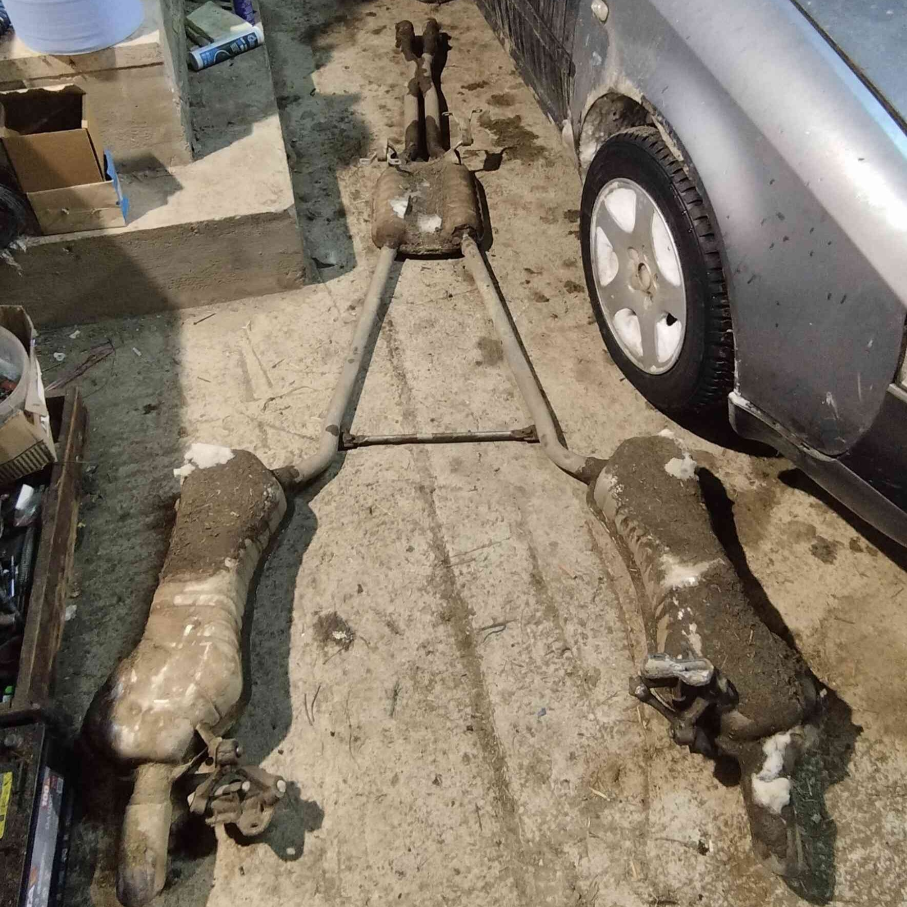
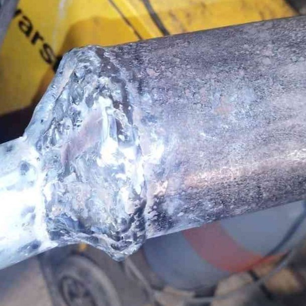
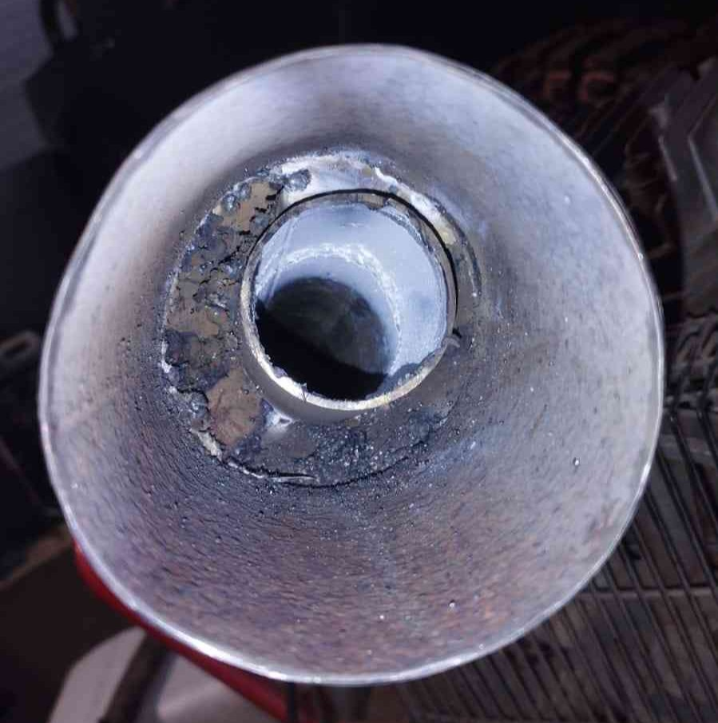
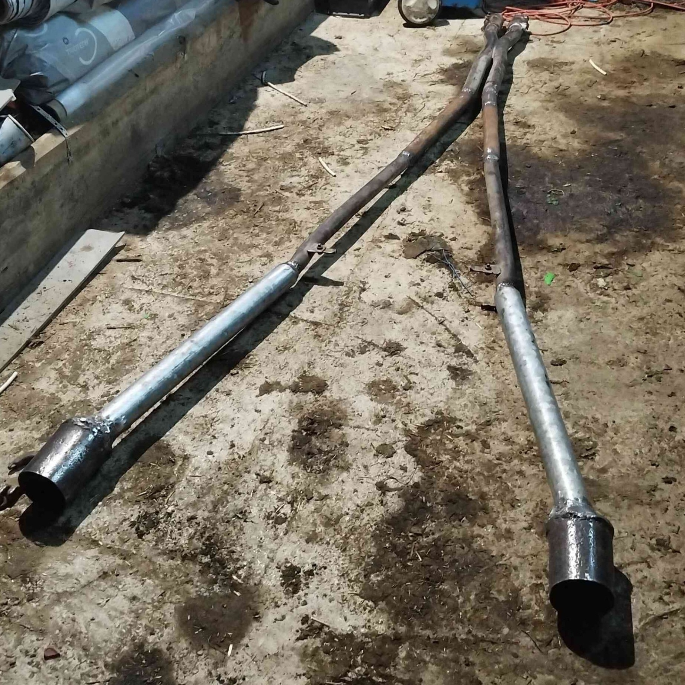
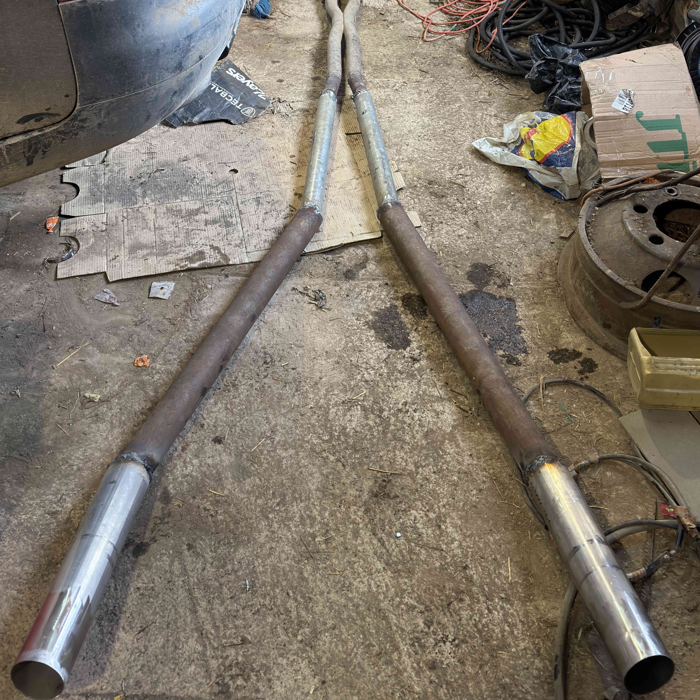
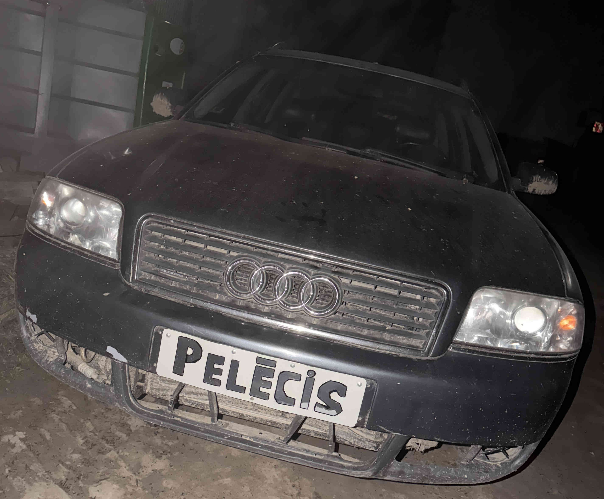
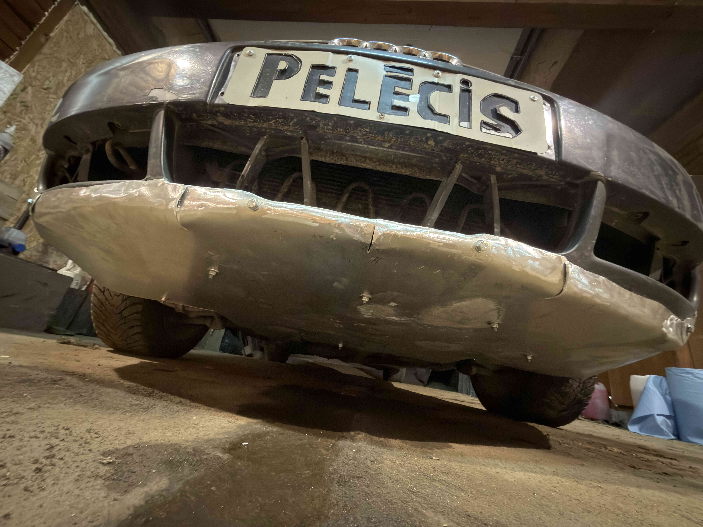

Jau no pagājušā gada decembra es iegādājos 2002. gada Audi A6 C5 Quattro ar nolūku apgūt jaunu braukšanas stilu un uzlabot iemaņas uz seguma ar pasliktinātu riepu saķeri.
Turpmākās dienas, kad bija brīvāks, ar klasesbiedru Mareku braucu mācīties apzinātu sānslīdi (driftu). Kā arī sāku filmēt savus skrējienus un iemācījos montēt foršus video!Labajā pusē redzams īss klips no mana samontētā video.
Pilnais video ir atrodams šeit: Pilnais video
Apzinātu sānslīdi apguvu un tālāk prātoju kā varētu Quattro uzlabot, radās ideja par skaņas uzlabošanu! Tas mani noveda līdz metināšanai, jo ļoti sagribēju uzmetināt mašīnai taisno izplūdi!
Taisno trubu taisa izgriežot transportlīdzekļa izpūtēja rezonatoru un klusinātāju, kuri slāpē dzinēja iekšējā sprādziena skaņu. Rezultātā tiek iegūta dobja izpūtēja skaņa un atvieglota gāzes izplūde, kas spēj efektīvāk iegriezt turbīnu.Zemāk redzamas bildes no izpūtēja pārmaiņām!



Izplūde tika uzlikta, taču vēlāk tiku pie nerusējošā tērauda trubām
un taisno trubu mazliet pārmetināju.


Ziemai beidzoties es sāku pētīt rallija pasauli, izpētiju viņu mašīnu standartus, braukšanas tehnikas un pamazām apņēmos savu audi arī pārtaisīt par rallija mašīnu.
Kā arī mašīnai nebija dots vārds, tāpēc ar Mareku izdomājām iesaukt par Pelēci, jo, vienkārši, mašīna bija pelēka! Attiecīgi es no nerūsējošas plāksnes izgriezu burtus un pieliku kā numurzīmi.

Visām rallija mašīnām bija pannas, tās sargā mašīnas vēderu (dzinēju, karteri, diferenciāli un visādas bremžu trubas) no spēcīgiem sitieniem, skrāpējumiem, kurus izraisa nelīdzenais segums. Ņemot šo visu vērā es dabūju alumīnija plāksi, kura ir elastīga un ar augstu izturību pret koroziju (nerūsē)! Šo plāksni es apgraiziju, sildot palociju un pats uztaisiju pannu!
Pannai aizlociju malas, lai trieciena gadijuma tā sargātu arī bamperi un, iespējams, pārlektu pāri šķērslim.